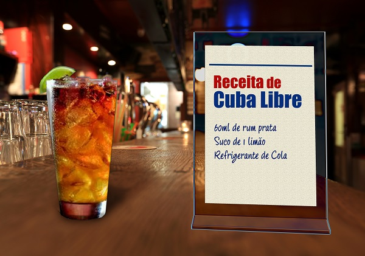

Restaurante La Carte
Desfrute da melhor culinária com um ambiente acolhedor.
Almoço
Ajiaco

Sobre
Um prato muito famoso, não somente em Cuba, como também em outros países latinos.
A sua base é bem básica, leva: batata, frango e milho. No entanto, as batatas que são
utilizadas neste prato são originais de Cuba. Além disso, os cubanos costumam usar muitas
ervas nativas. Sendo assim, nesse prato especificamente vai uma erva chamada Guasca.
R$ 0,00
FAZER O PEDIDO
Arroz Con pollo

Sobre
Um dos pratos mais comuns e falado de Cuba. Ele é uma mistura de ingredientes, como
todo prato cubano. O diferencial desse prato é a cor amarelada do arroz, ela fica com essa coloração,
pois é misturada e cozida com Achiote. Deste modo, o acompanhante principal desse arroz é o frango,
que também é cozido com o arroz.
R$ 0,00
FAZER O PEDIDO
Ropa Vieja
Sobre
Um prato bem tradicional e básico. A sua aparência não é muito agradável e muito menos o seu
nome, mas o sabor é excelente. Vale super a pena experimentar! Os ingredientes são: carne de vaca
desfiada misturada com arroz branco, feijão e salada para fechar o prato. Além disso, o grão de bico é
algo fundamental também nessa refeição.
R$ 0,00
FAZER O PEDIDO
Tamales

Sobre
Um prato que você pode encontrar em outros países, mas cada um deles tem um tempero diferenciado.
O cubano é uma mistura de frango e milho. Contudo, podemos ver que os cubanos gostam muito de comidas misturas.
A tamales é como se fosse uma pamonha, bem macia e deliciosa!
R$ 0,00
FAZER O PEDIDO
Picadinho a la cubana

Sobre
Esta comida é muito comum na gastronomia típica de Cuba. São colocados numa panela cebola, alho e azeite onde se adiciona carne,
azeitonas, passas, orégãos, pimenta, sal e pimentão. É possível acompanhar com arroz branco.
R$ 0,00
FAZER O PEDIDO
Chicarrones
Sobre
É feito a partir de carne de porco frita com a sua pele e cortada em cubinhos.
Geralmente são acompanhados com o arroz congrí onde é cozido junto com o mesmo e pode comer-se também
com batata frita.
R$ 13,99
FAZER O PEDIDO
Tasajo a la cubana

Sobre
Carne seca e guisada, com acompanhamentos de batata doce e tomate esmagado.
R$ 11,99
FAZER O PEDIDO
Moros y cristianos

Sobre
Mescla de sabores africanos, com o perfume das especiarias da Índia e o refinamento e as técnicas cubanas, a culinária da Martinica agrada aos que apreciam peixes e crustáceos dos frios mares do Caribe e Atlântico. É o casodo court-bouillon, que só difere da versão da metrópole ao acrescentar espesso molho de tomates ao cozido de peixe branco.
R$ 8,99
FAZER O PEDIDO
Arroz à crioula
Sobre
Arroz à crioula é um prato delicioso e versátil da culinária cubana. É uma maneira saborosa de preparar arroz, geralmente misturando-o com uma variedade de ingredientes frescos e coloridos.
R$ 6,99
FAZER O PEDIDO
Bebidas
Cubalibre

Sobre
A história da bebida Cuba Libre está diretamente relacionada com a história da independência de Cuba. O que se conta é que, em 1898, os soldados norte-americanos tentavam ajudar Cuba em sua independência e, durante sua estadia na região, criaram o drink mais famoso do país.
R$ 0,00
FAZER O PEDIDO
Mojito
Sobre
Composta por rum (bebida alcoólica fermentada originada de Cuba), o açúcar (ou xarope), hortelã,
limão e água gaseificada.
R$ 0,00
FAZER O PEDIDO
Daiquiri de limão
Sobre
É uma bebida alcoólica ou, um coquetel feito com rum, suco de limão, e açúcar ou xarope.
R$ 0,00
FAZER O PEDIDO
Daquiri de morango

Sobre
É uma bebida alcoólica ou, um coquetel feito com rum, suco de morango batido em coqueteleira,
e adicionado açúcar ou xarope.
R$ 0,00
FAZER O PEDIDO
Piña colada

Sobre
Um coquetel doce feito com rum, leite de coco e sumo de abacaxi. É servido geralmente batido
ou mexido com gelo. Pode ser traduzido como abacaxi coado.
R$ 0,00
FAZER O PEDIDO
Café a la cubana

Sobre
É muito espesso e concentrado. Servido em pequenas quantidades e sem açúcar.
R$ 0,00
FAZER O PEDIDO
Sobremesas
Arroz con leche

Sobre
Famoso pudim de arroz cubano. Feita com arroz, leite, açúcar e canela, esta sobremesa tem
uma textura aveludada.
R$ 0,00
FAZER O PEDIDO
Brazo de gitano

Sobre
Ou braço de cigano, em sua tradução literal, é um tipo de pão de ló recheado com geléia de goiaba.
A massa leve do bolo e o recheio cremoso torna o sabor ainda mais marcante.
R$ 0,00
FAZER O PEDIDO
Capuchinos a la cubana
Sobre
Bolos de textura esponjosa modelados em forma de cones. A massa é macia e derrete na boca,
deixando um sabor suave graças ao xarope açucarado no qual os cones são mergulhados.
R$ 0,00
FAZER O PEDIDO
Patacones
Sobre
É uma iguaria feita de pedaços de bananas verdes fritas acompanhada de legumes.
R$ 9,99
FAZER O PEDIDO
Boñuelos de viento
Sobre
Bolinhos fritos cuja massa é feita com farinha, manteiga, ovos e açúcar. A cobertura
normalmente leva açúcar polvilhada, chantilly ou xarope. É o típico lanche rápido para
acompanhar o café da tarde.
R$ 0,00
FAZER O PEDIDO
Señoritas
Sobre
Sobremesa composta de massa folhada preparada com leite, manteiga, gema de ovo, açúcar
e chocolate ou baunilha.
R$ 0,00
FAZER O PEDIDO
Tocinillo de cielo
Sobre
Embora não haja resquício algum de carne suína nele. Na verdade, o doce é um tipo de pudim
aerado feito com gemas de ovos, água e açúcar.
R$ 12,99
FAZER O PEDIDO
Tostones Cubanos

Sobre
Banana-verde cortada em rodelas, prensada e frita– ou no fufú –espécie de purê feito também com bananas verdes.
R$ 14,99
FAZER O PEDIDO
Yuca con mojo

Sobre
Yuca con mojo é um prato tradicional da culinária cubana, mas também é popular em outras partes da América Latina e do Caribe. É feito com mandioca (yuca) cozida e temperada com um molho chamado "mojo", que é preparado com alho, suco de laranja azeda (ou limão), cebola e outras especiarias.
R$ 19,99
FAZER O PEDIDO